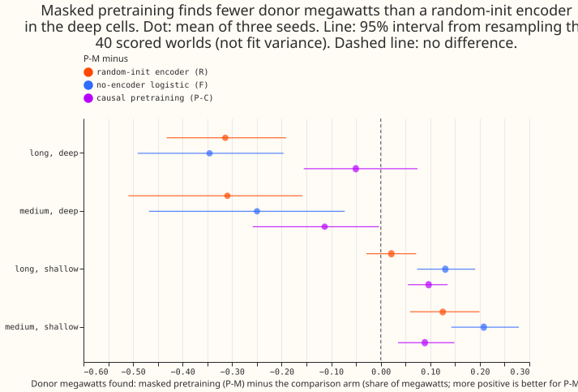

Why does the search of experiment 670 leave most recipient megawatts unpaired, and does a pretrained encoder find the donor of an injected load transfer better than the event table's own features?
Masked pretraining did not help find the donor of a load transfer, and the donor end, not the recipient search, is where E1-J loses megawatts. Experiment 675 reopens the graph line that experiment 672 closed under its stop rule, at the maintainer's request, with experiment 660's generator unchanged. Step 0 found that the donor was not found for 0.87 of the found-but-unpaired recipient megawatts in the long and deep cell. The frozen probe then found 0.28 of the long and deep donor megawatts with the pretrained encoder (P-M), against 0.59 with a random-init encoder (R), 0.63 with a logistic regression on the node inputs (F), and 0.44 for E1-J, all at E1-J's false-donor rate of 0.63 per Primary-year. The verdict is not supported.
Terms
- P-M, P-C, R, F. The probe's four arms. P-M: a temporal convolutional encoder pretrained to reconstruct masked windows of real residual history, then frozen. P-C: the same encoder pretrained to predict the next 3 to 6 hours causally. R: the same encoder, randomly initialised, frozen. F: a logistic regression on the node inputs, with no encoder.
- Cell, donor, recipient, found, paired, E1-J. As in experiment 672. In short: cells group injected events by length (long: over 7 days or no end; medium: over 1 up to 7 days; short: up to 1 day) and depth (deep: 8 noise units or more; shallow: 2 up to 8). A noise unit is the block-difference noise of a Primary substation's residual, in megawatts. E1-J is experiment 653's event table plus experiment 670's recipient search. Stop rule 0 adopts E1-J on the new residual panel if it pairs 0.60 or more in both deep cells. Arm C is experiment 327's residual.
- Donor megawatts found at E1-J's false-donor rate. The share of the megawatts of injected donor steps (edge transfers with a metered recipient) that lie within -12 to +24 hours of an alarm, where each arm's alarm threshold is set so that its false alarms per Primary substation and year equal E1-J's (0.63). Every arm's achieved rate matched that target. E1-J's own figures differ from the 0.22 and 0.29 of experiment 670's page only by cell and measure: 0.22 is the paired share of recipient megawatts, and 0.29 the paired share of all transfer megawatts.
Figures
The figure shows that masked pretraining finds fewer donor megawatts than the random-init encoder and than the no-encoder regression in both deep cells, fewer than causal pretraining in the medium and deep cell, and more than the no-encoder regression in both shallow cells. The intervals resample worlds only: they leave out fit variance, the random-init encoder's seeds range from 0.46 to 0.70, and the no-encoder regression is one fit.

Results
- Step 0 has four CPU-only parts. 0a diagnoses where E1-J loses recipient megawatts, 0b chooses the residual panel, 0c re-runs E1-J on that panel, and 0d classifies the verified D5 and D16 transfer into a cell.
- Step 0a, where E1-J loses recipient megawatts. E1-J re-run on worlds 900 to 939 reproduces experiment 670's long and deep count exactly (37 found-but-unpaired recipient ends, 139.8 MW). Each end is sorted into the first reason in this list that applies. Share of those megawatts, long and deep (37 ends) and medium and deep (24 ends): donor not found 0.87 and 0.84; recipient start outside the search window 0.02 and 0.00; megawatt ratio outside the share window 0.01 and 0.00; linked to the wrong donor 0.00 and 0.00; split across 2 or 3 recipients 0.04 and 0.02; other 0.05 and 0.14.
- Step 0b, the residual panel. Experiment 327's arm C (the convex model of experiment 130, a rolling 24-month monthly refit, no lagged power, a fitted solar capacity) stays as the residual. Leave-one-year-out copies of the same model (fitted capacity, capacity pinned at experiment 649's calibrated median, and capacity pinned at experiment 45's latest vintage) had a lower noise unit than arm C at 2, 1, and 3 of 15 Primaries respectively (arm C: 9), because a year-out fit cannot follow the structural change at D8 (1.61 against 1.45 MW) and D18 (0.23 against 0.14 MW). Arm C does not absorb the verified D5 and D16 transfer: its event-window mean residual minus the 28 days before is -1.35 MW at D5 and +1.98 MW at D16. A neural lag-free cross-fit was not built.
- Step 0c. E1-J pairs 0.29 and 0.25 in the long and deep and medium and deep cells, below 0.60, so stop rule 0 does not fire.
- Step 0d. The verified D5 transfer lasts 15.4 days at 9.04 noise units (long and deep); D16 lasts 14.8 days at 4.52 noise units (long and shallow).
-
Donor megawatts found, mean of three seeds (donors per cell in brackets; E1-J and F have no seeds, F being one fit).
Cell E1-J P-M P-C R F Long, deep (59) 0.44 0.28 0.33 0.59 0.63 Medium, deep (47) 0.40 0.16 0.28 0.47 0.41 Long, shallow (303) 0.25 0.24 0.14 0.21 0.10 Medium, shallow (214) 0.17 0.26 0.17 0.14 0.05 Short, deep (55) 0.17 0.09 0.31 0.28 0.12 Short, shallow (229) 0.05 0.06 0.11 0.04 0.02 -
P-M minus R and P-M minus F, with world-resampled 95% intervals. Long and deep: -0.31 (-0.43 to -0.19) and -0.35 (-0.49 to -0.20). Medium and deep: -0.31 (-0.51 to -0.16) and -0.25 (-0.47 to -0.07). Long and shallow: +0.02 (-0.03 to +0.07) and +0.13 (+0.07 to +0.19). Medium and shallow: +0.13 (+0.06 to +0.20) and +0.21 (+0.14 to +0.28).
- Seed spread. R's long and deep result is 0.70, 0.62, and 0.46 over its three seeds, and 0.55, 0.56, and 0.31 in the medium and deep cell. P-M's seeds give 0.26 to 0.29 and 0.12 to 0.21. Every P-M seed is below every R seed in both deep cells.
- Short cells. The short and deep and the short and shallow cells are in the table but not in the figure or the verdict, which the plan restricts to the deep cells. In the short and deep cell the causal arm P-C finds 0.31, more than P-M (0.09) and F (0.12) and about as much as R (0.28).
- Recipient AUROC. Between 0.91 and 0.94 for every arm in the two deep cells (P-M minus R: +0.01 long and deep, 0.00 medium and deep). The pair block of neighbour step ratios, shared by all arms, sets most of it.
Predictions
- P-M minus R in donor megawatts found: failed in the long and deep (-0.31), medium and deep (-0.31), and long and shallow (+0.02, needed +0.05) cells, and held in the medium and shallow cell (+0.13, needed +0.03).
- P-M minus F: failed in both deep cells (-0.35 and -0.25, needed +0.03), and held in the long and shallow cell (+0.13).
- P-M minus R in recipient AUROC: failed (about 0 in the deep cells, needed +0.05; -0.01 in the long and shallow cell, needed +0.03).
- P-M minus P-C: failed in both deep cells (-0.05 and -0.11, needed 0 or more).
- Step 0 prediction: held. The largest reason is the donor not being found, and E1-J pairs under 0.60.
- Probe stop rule fires. P-M fails both its R bar and its F bar in both deep cells, so pretraining is dropped. P-C beats P-M by 0.05 (interval -0.16 to +0.07, within noise) and 0.11 in the deep cells, which meets the rule's 0.03 bar, but P-C is itself 0.26 and 0.20 below R. The two clauses of the rule therefore point to different starting weights for experiment 676.
- Per-seed condition. For the held predictions, every seed is above its bar (medium and shallow, P-M minus R; long and shallow, P-M minus F).
Checks
- Leak tests. The masked-window and scored-target leak tests, and a causal test, passed in the code review before any fit, with a positive control for each.
- Matched false-donor rate. All arms reached 0.625 per Primary-year, E1-J's rate.
- Audit. A fresh Sonnet reviewer re-derived the long and deep donor megawatts found for P-M seed 0 (0.262), R seeds 0 and 2 (0.701, 0.461), and F (0.625) from the raw score files with its own code. It found no train and test mismatch, normalisation error, window error, threshold-matching error, or world mismatch that explains the deficit. The audit triggers fired (R beats P-M, R varies by seed, and a nested control beats the pretrained arm). The reading stands because P-M is below R in all three seeds in both deep cells. The intervals resample worlds only, so they do not include fit variance, and F is one fit.
- Sample sizes. The probe trains on 200 injected worlds and tests on 40, with three seeds, and R's seed spread is as large as some contrasts. The long and deep cell has 59 donor steps and the medium and deep cell 47.
- Inherited caveats. NGED's logs may miss load shifts, so matched logged shifts are lower bounds. The noise units saw the validation months, and the injected start hours come from NGED's logged onsets up to 2026-07, as in experiments 670 and 672.
- Pretraining length. Pretraining ran 10,000 steps per arm and seed (the plan said about 20,000, timed against the GPU budget) and used about 1.8 GPU-hours over six runs. The masked loss was still falling slowly, so a longer run might change P-M, though not by the 0.3 that separates it from R.
What to try next
- Experiment 676 should use the hybrid arm (the graph neural network's donor posterior as the candidate source inside E1-J's recipient search), because step 0a puts the loss at the donor end. Whether it starts from a randomly initialised encoder or from the causal arm's weights is for the graph Discuss session, because the two clauses of the stop rule disagree.
- In the long and deep cell, a logistic regression on the node inputs finds more donor megawatts than E1-J (0.63 against 0.44). Whether that holds with the false-donor rate measured on the real record is untested.
The plan as committed
The plan below was committed before any score was read.
This is the plan, committed before any score is read. It reopens the graph line that experiment 672 closed at 15 Primaries under its pre-registered stop rule. The maintainer asked for the second test, and the page says so because the stop rule is not overturned by new evidence. It is a deliberate test of components that experiment 672 did not build, not a repeat of it. Experiment 675 is part 1; the edge-state network is part 2 (experiment 676), run only if part 1 does not adopt the event table.
The question
Experiment 670 found that the event table with a recipient search (E1-J) pairs 0.29 of the injected megawatts in the long and deep cell and 0.25 in the medium and deep cell. It finds 0.73 of the recipient megawatts in the long and deep cell and pairs 0.22, and no experiment has said where the other 0.51 is lost. Experiment 672's graph network found donors as well as E1-J and then failed to link them (0.47 of donor megawatts found, 0.09 paired). This part answers two questions in order. First, why does E1-J leave found recipients unpaired, and does a residual panel built by the lag-free modular network (instead of experiment 327's convex residual) change what E1-J finds? Second, does an encoder pretrained on masked windows of real history carry information about donors and recipients that a random encoder and the event table's own features do not?
Method
- Step 0a, E1-J's unpaired recipients (CPU). From experiment 670's stored rows for the long and deep and the medium and deep cells, each found but unpaired recipient end is sorted into the first reason that applies: the donor was not found; the recipient start lies outside the search window; the megawatt ratio lies outside the share window; the recipient was linked to the wrong donor; the transfer was split across two or three recipients; other. The page reports the megawatt share of each reason and says which end the next step should aim at.
- Step 0b, the residual panel. In order, the first that succeeds is used: (1) the lag-free modular network (weather encoder, date-time encoder, mixer, no lags) on ERA5 and CAMS from 2019-09, cross-fitted by year so each year is scored by the copy trained on the other years, for the 15 Primaries with experiment 591's early-calibration cuts; (2) the same network from 2022 if the 2019 to 2021 cleaned power or weather is not on disk; (3) experiment 327's convex residual. The all-Primaries median is removed in all three. At the maintainer's instruction (relayed by the manager), the lag-free model is made as good as the tricks that worked allow. Before the panel is built, the plan's first task is an inventory from the merged pages of the lag-free demand recipes and tricks that helped: the best-guess and K1/K3 lag-free bodies, the explicit solar term of experiments 639 and 643, temperature-trend inputs such as experiment 622, the D5 offset question, holiday and calendar features, and whatever else the pages show. The expected-power model then takes (1) an explicit solar term from CAMS and ERA5 known weather (experiment 649's capacity table as the centre with its interval, a physics curve from the pooled plant table with a learned fleet blur, calibrated rather than raw capacity, never scored on forecast weather; traps: a sunny spring can look like a capacity step, and a cloud-following load looks like solar), (2) temperature-trend inputs, and (3) the other proven tricks. It uses no lagged power and no free slow offset that could absorb a long event (E1's masked frozen seasonal slow level instead), is cross-fitted by year so a year's events are not in the copy that scores it, and cuts ERA5 and CAMS at 2026-07-01. The page reports its out-of-fold residual noise per Primary against experiment 327's arm C residual (the one E1 and E1-J used), uses the better residual for E1, E1-J, and the network alike, and re-runs E1 and E1-J on it so that a better residual cannot pass for a better detector. If this needs more than 1 GPU-hour in step 0, the plan pull request says so. The page names the panel used and whether its weather exists at forecast time (it does not: ERA5 arrives about 5 days late, so the panel is a laboratory residual, as in experiments 670 and 672).
- Step 0c, equal treatment. E1 and E1-J are re-run on the new panel with experiment 660's default generator, unchanged, and E1-J's penalties are retuned on validation worlds with experiment 670's grid. These re-runs are the baselines for the probe and for experiment 676.
- Step 0d. The verified D5 and D16 transfer is classified into its cell with experiment 653's noise units.
- Probe encoder. A shared bidirectional temporal convolutional network per Primary on two streams: a 1-hour stream of 6 dilated layers with 64 channels, and a daily stream of 4 layers with 32 channels, fused by adding the upsampled daily features. Node inputs are the residual in noise units (clipped at 30), a present flag, the expected-power q05 to q95 width in noise units, the mean-residual gaps over the past and the future 1, 3, and 7 days, step statistics at 6-hour and daily scales in both directions of time, the noise unit as log megawatts, the routine-step rate, a megawatt-or-megavolt-ampere flag, and hour and weekday as sine and cosine. Each past statistic has a future twin stored as a separate channel, and every window carries a coverage channel.
- Pretraining. The masked arm (P-M) reconstructs the residual in masked windows with a Student-t distribution per hour (1-hour stream, windows of 3 to 24 hours, 1 to 3 per Primary) and a daily mean (daily stream, windows of 1 to 7 days). In 30% of samples the same window is also masked at one or two neighbours, and 40% of Primaries carry a mask. The loss counts masked hours only. The causal arm (P-C) predicts the mean and spread of the next 3 to 6 hours with causal convolutions. Rows before 2024-01-01 only; AdamW at learning rate 1e-3 with cosine decay, about 20,000 steps, timed over the first 500 steps against the GPU budget.
- Leak tests (both run in the code review, before the first fit). (1) Masked-window leak:
for 200 seeded samples, replace the masked residual (at the masked Primary and every co-masked
neighbour) with Gaussian noise of 10 noise units, recompute every input, and assert the inputs are
bit-identical (
torch.equal, float64, CPU) and the reconstruction predictions agree to 1e-12; repeat with a step of +20 noise units. Every statistic whose window overlaps the mask is recomputed from the readings outside the mask, per sample, after the mask is drawn. (2) Scored target leak: replacing the injected-truth table by a shuffled copy must leave every input unchanged. - Probe arms and training data. P-M, P-C, R (random initialisation), F (logistic regression on the node inputs, no encoder), and P-M-noemb (P-M without the optional weather and date-time embeddings), each with 3 seeds. The probes train on 200 injected worlds and are tested on the 40 scored worlds. The donor probe asks whether an hour lies inside the first 24 hours of a donor step; the recipient probe asks, for each true donor onset and each linked neighbour, whether the neighbour is the recipient.
- Measurement. The share of donor megawatts found at a false-donor rate equal to E1-J's on the scored worlds, and the recipient AUROC, per cell, with intervals that resample whole worlds. Cells are experiment 665's six cells; shares are MW-weighted; found and paired follow experiment 670.
- Standing practices. Cleaned data and the D15 and D18 cut before 2025-03-01 as in the
injected panel of experiment 660 (no refit cadence applies; no forecast is scored). One GPU process
at a time, behind the maintainer's one-year backtests, checkpoint every 1,000 steps. CPU work runs
under
systemd-run --user --scope -p MemoryMax=16G -p OOMPolicy=continue. The ceiling is 9 GPU-hours for experiments 675 and 676 together: step 0 under 1, the probe at most 3. - Reviews. A Sonnet plan review before the code; a fresh Sonnet code review (including both leak tests) before the first fit; a Sonnet results review; a Sonnet write-up review; and a Sonnet prose review. The review findings are triaged in the pull request.
- Unlogged-event caveat. NGED's logs may miss load shifts, so matched logged shifts on the real record are lower bounds. The long and deep cell is nearly empty on the real record (experiment 665 found none of the 77 logged shifts longer than 1 day in it), so success there can be shown only on injected worlds.
- Inherited leaks. The noise units (experiment 653) saw the validation months, and the injected start hours come from NGED's logged onsets up to 2026-07, as in experiments 670 and 672.